The kunja at the foot of Govardhan
The kunja at the foot of Govardhan
A SRI RUPA SEVA KUNJ PROJECT
Slokamrita
Verses to
return to
Choose a verse, listen to it in Sanskrit, and read it word by word. Learn it on your own or with other devotees.
Website and app. Open Slokamrita in your browser with nothing to install, or get the app to read downloaded verses offline.
- 302
- published verses
- 310
- recordings
- 62
- public collections
VERSE OF THE DAY
This is how a verse looks in Slokamrita
A working piece of the app. Switch translations on and off, hover over a Sanskrit word, play the recording or open the slide.
Bhagavad-gita 2.13
of the embodied beingdehino in this’smin just asyathā in the bodydehe
boyhoodkaumāraṁ youthyauvanaṁ old agejarā
similarlytathā attainment of another bodydehāntara‑prāptir
the wise persondhīras thereintatra notna is deludedmuhyati
Hover over a Sanskrit word to highlight its meaning in the word-by-word translation
The recording did not load. Listen on the verse page
Know other recordings of this verse?
Suggest recordingHighlighted letters mark guru syllables: heavy syllables held longer
Open the verse in SlokamritaEVERYTHING YOU NEED TO LEARN A VERSE
What Slokamrita can do
Pick a feature from the list to see it in the app.Tap a feature to open the details and a screenshot.
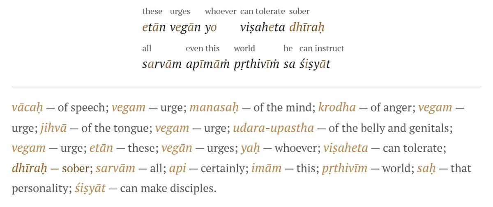

For webinars and classes
Hover over a Sanskrit word and its meaning lights up in the word-by-word translation. Handy when explaining a verse in a webinar: everyone sees which word you mean.
Try it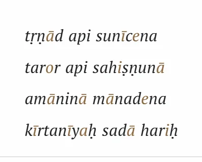

Heavy syllables are highlighted, so you can see the rhythm and chant more easily.
Take a look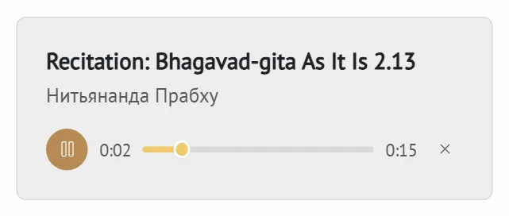
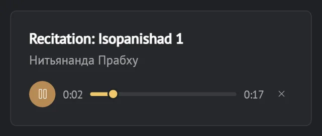
Recitations by devotees: listen to the verse and repeat after the reciter.
Listen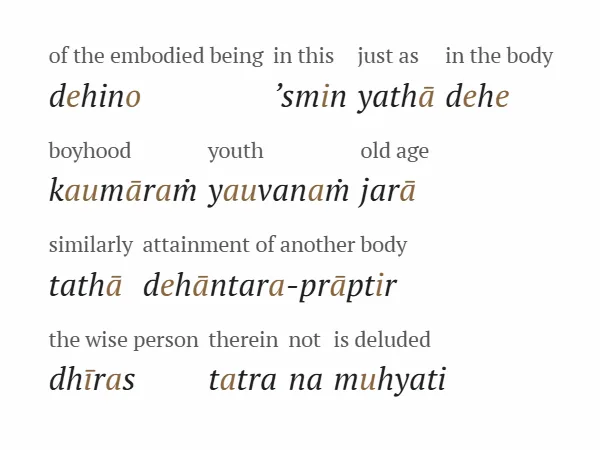

The meaning of each word right above the Sanskrit. Turn it off to test yourself.
Turn it on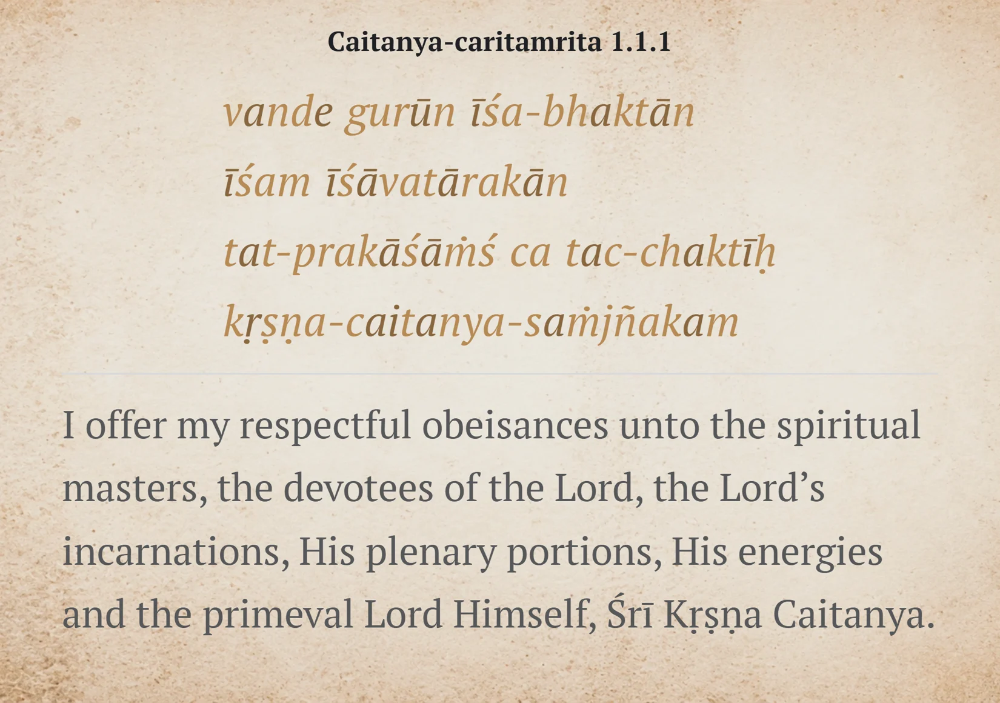
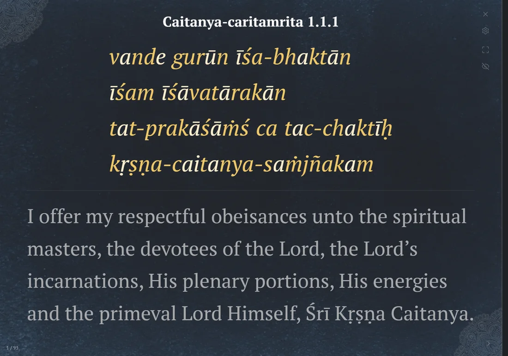
For lectures
A verse on a projector or shared screen. Choose what to show: Sanskrit, interlinear, word-by-word or literary translation, and expand the slide to full screen.
Open the slide
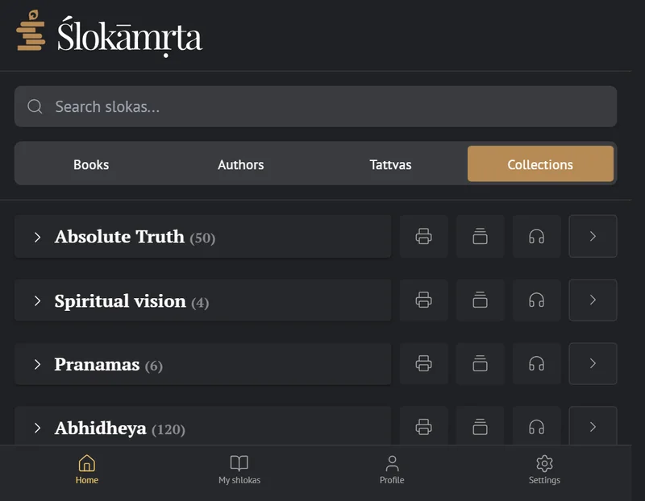
Verses by topic, from the Absolute Truth to praṇāmas, with printing, slides and audio for the whole collection.
All collections

Add verses from the shared sections to your collections or enter your own verse.
Learn more

If the verse is in Vedarama, AI brings it over and fills in the fields. You review the text before saving.
How it works
STUDY TOGETHER
Read with other devotees
In each group, devotees read verses together, listen to recitations, and discuss what the verses mean.
They derive great satisfaction and bliss from always enlightening one another and conversing about Me.
From Śrīla Prabhupāda’s translation
MY VERSES
Your own verses and collections
Preparing a meeting or a class? Gather the verses you need into your own collection.
Take a verse from the shared sections
Or enter your own: lines, interlinear and word-by-word translation, source.
Let AI do the routine
If the verse is in Vedarama, AI quickly brings the text over and fills in the fields. You review the result before saving.
Present the collection
Open it as a slideshow at a meeting, or review the verses in the app.
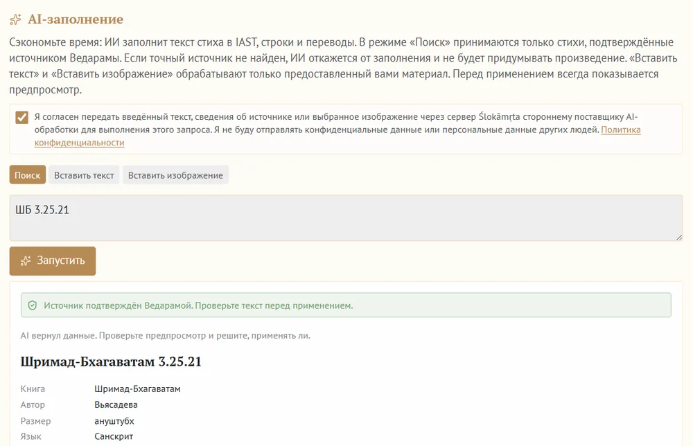

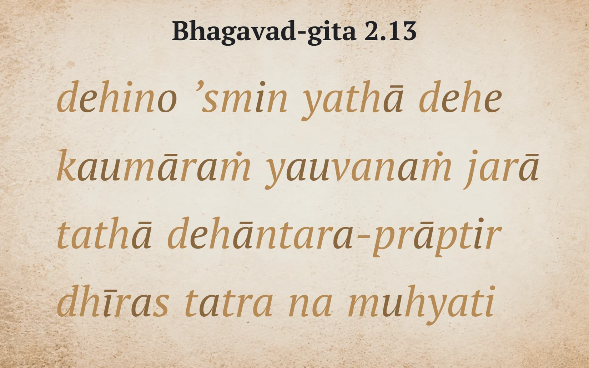
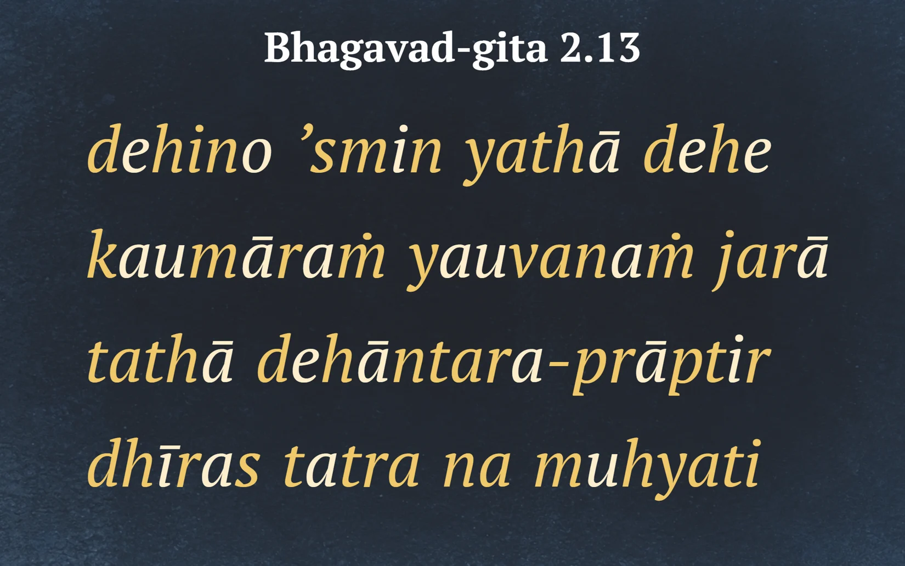
FOR LECTURES AND GROUP READING
Put the verse on screen
Open a slideshow from a book section and put it on a projector or shared screen. Keep only the Sanskrit for recitation, or turn on translations for study. Hover over a word and everyone sees its meaning.
FOR ANDROID AND IPHONE
Slokamrita on your phone
The main difference from the web version is offline mode. Download verses and collections and open them without internet: on the road, on parikrama, or wherever there is no signal.
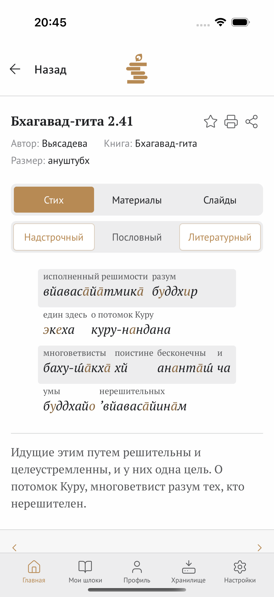
SLOKAMRITA BLOG
Articles on verses and practice
Verse studies, memorization tips and project news.
All articlesHow to learn a verse in a week
A simple day-by-day review plan, from the first listen to reciting by heart.
Read
Guru and laghu: why verses are chanted
What heavy and light syllables are, and how they set the rhythm of the anuṣṭubh.
Read
Verses for Kartika
A collection of verses for reading together in the month of Damodara.
Read
ABOUT THE PROJECT
Ślokāmṛta
This application is part of the digital space of Sri Rupa Seva Kunja. It is designed to help Vaishnavas who study and memorize shlokas from sacred scriptures.
It already offers carefully verified translations, including word-for-word and interlinear translations, as well as beautiful recitations. We will gradually add lectures on these shlokas and other features.


Sri Rupa Seva Kunja
Sri Rupa Seva Kunja — a center for education and service at the foot of Govardhan.
Team
- Achintya Krishna dasProject Lead
- Svarupananda dasSponsor, Project Manager
- Narada dasDeveloper
- Sridama dasCopywriter
- Anantajit dasCopywriter, Sanskrit Expert
READ, SING, DISCOVER VRAJA
More from Sri Rupa Seva Kunj


YOUR FIRST STEP
Start with one verse
Open the web app in your browser or install Slokamrita on your phone.